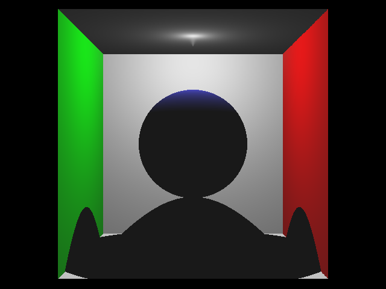
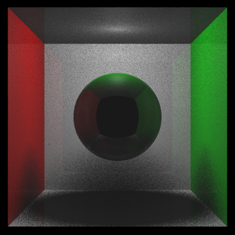
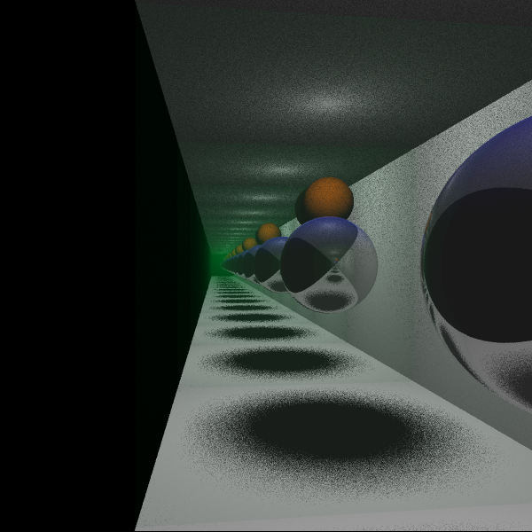
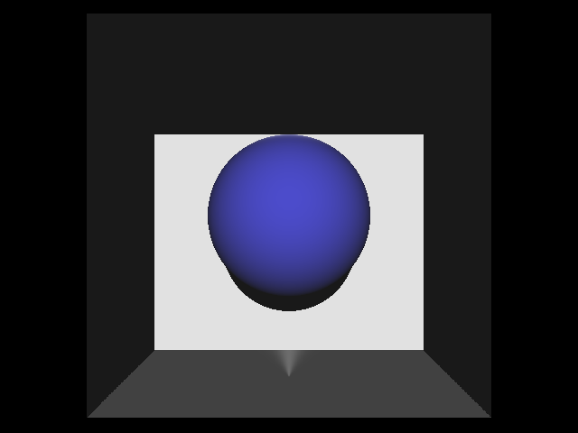
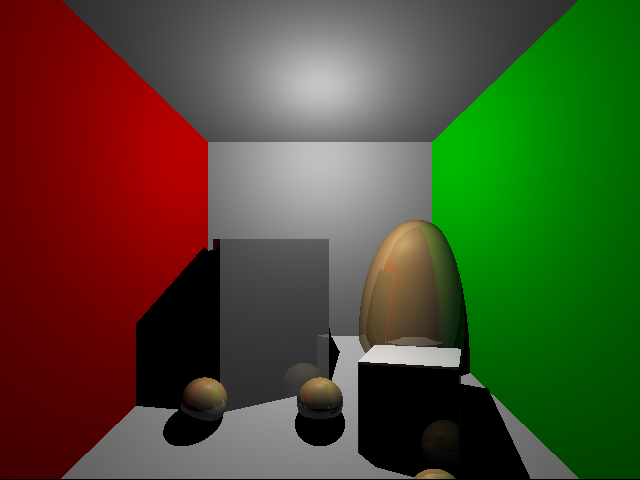
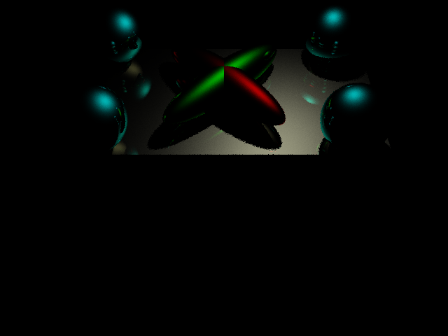

Raytracer
March 2025
C++, OpenGL
As part of my Computer Graphics courses, I implemented a CPU raytracer in C++ from scratch. The program reads in an input file of commands that sets up the scene data, then raytraces a scene based off of it. The input file commands include sphere and triangle geometry definitions, camera properties, material properties, directional and point lights, translation, rotations, and scaling. The scene file also contains information on the number of bounces, image size, toggling soft shadows and attenuation for point lights, and the number of rays cast per pixel.The code involves casting rays from the camera going through random positions within each pixel for anti-aliasing, detecting intersections with triangle and sphere geometries in the scene, and calculating the new directions and the emissive/diffuse/ambient/specular lighting of rays along multiple bounces. It implements conservation of energy (ensuring specular + diffuse properties are not greater than 1) that prevents specular reflections from generating more light than is present in the scene. It contains classes for geometries, materials, models, and cameras, and uses the GLM library for linear algebra. It also uses multi-threading in the main raycasting loop for better performance. Over the course of the class I will implement more features for faster and more realistic results including acceleration structures and global illumination.
Below are some images generated by the raytracer:

 (normal shading)
(normal shading)
 (hard shadows)
 (soft shadows)
 (mirror reflections)
 (directional lighting)
 (hard vs soft point lights)
 (diffuse lighting)
(diffuse lighting)
 (specular lighting)
Return to Projects